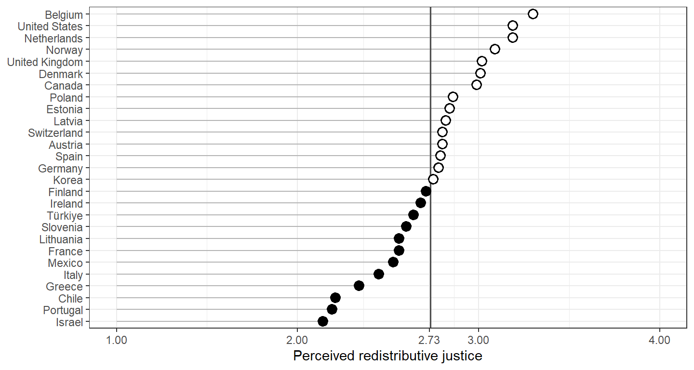
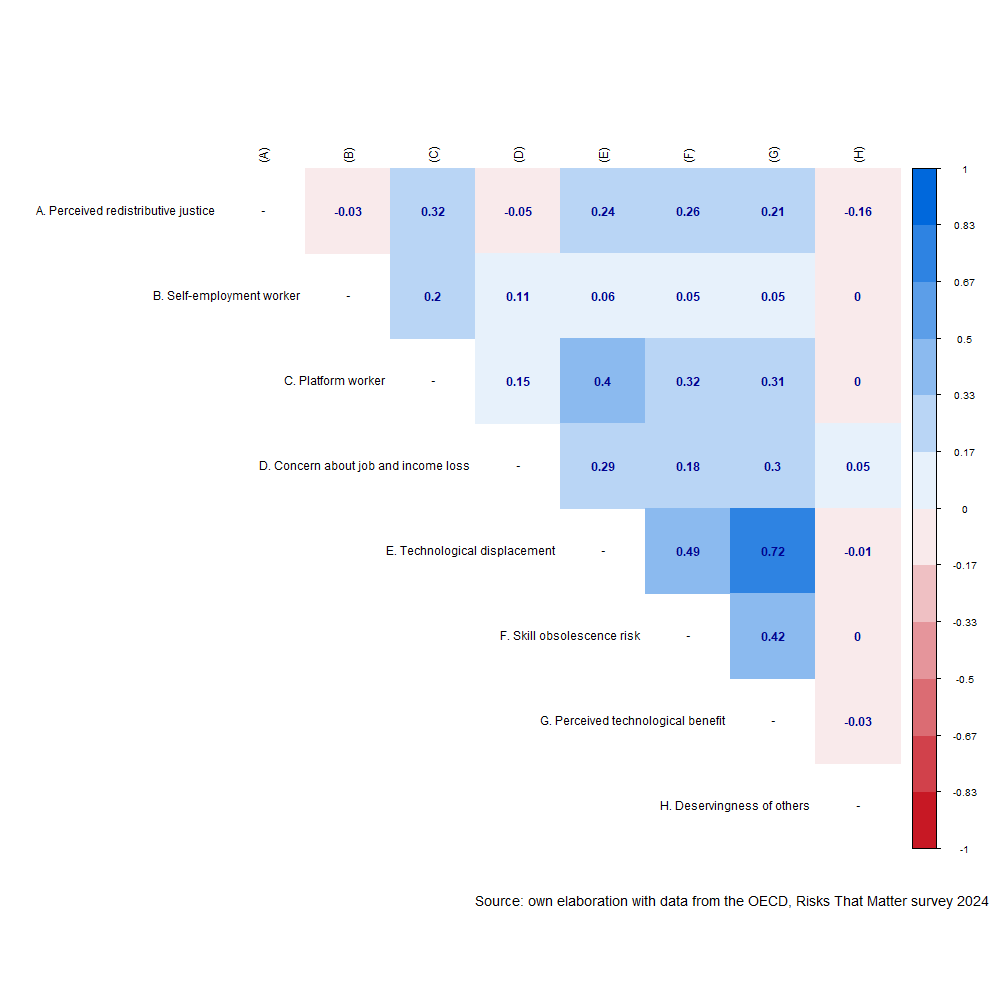
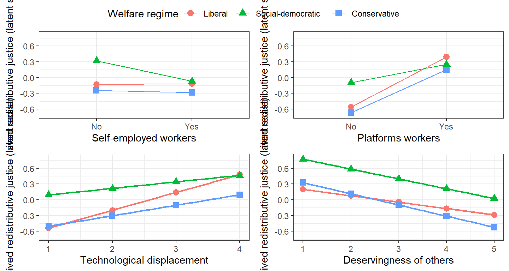

![]()

Redistributive Justice, Job Insecurity, and Perceived Technological Risk: How Labor Market Position Shapes the Legitimacy of the Welfare State in 27 OECD Countries
Abstract
This study Keywords: Redistributive preferences, Labor market position, Welfare State
1 Introduction
Contemporary technological transformations, such as automation, artificial intelligence, algorithmic management and intermediation through digital platforms, are altering the conditions under which workers relate to social protection systems (Frey and Osborne, 2017; Vallas and Schor, 2020). What is sometimes termed the fourth industrial revolution changes the content of tasks and the stability of employment, the subjective experience that workers have of their position in the labour market and, with it, their assessment of the fairness of their relationship with the welfare state (Busemeyer and Sahm, 2022; Gallego and Kurer, 2022). These systems were built on the premise of stable, full-time and long-term employment, in which contributions flowed predictably from wages and rights accumulated over continuous careers (Esping-Andersen, 1993; Korpi and Palme, 1998). The progressive decoupling between that model and the actual forms of work, mainly through temporary contracts, self-employment and platform-mediated work, raises the question of how citizens today perceive the fairness of the exchange they maintain with the institutions that ought to protect them.
Research on attitudes towards the welfare state has examined extensively the determinants of support for redistribution, showing that exposure to labour market risk and to automation tends to increase the demand for social protection (Busemeyer and Sahm, 2022; Rehm, 2009; Thewissen and Rueda, 2019). Much less attention has been paid, by contrast, to perceived redistributive justice, that is, to the evaluative judgement of whether the benefits that an individual receives from the state constitute fair compensation for the taxes and contributions they pay (Roosma et al., 2016).
This study addresses whether perceiving the functioning of the state as fair is related to labour market position and the perception of technological risk. Drawing on data from the Risks That Matter survey of the OECD (2024), which covers more than 40,000 people in 27 countries, this research simultaneously introduces three little-explored elements. First, it distinguishes labour market position according to type of employment —formal employees, self-employed workers and platform workers—, forms that maintain unequal links with the social protection system and that have rarely been examined together in relation to perceived redistributive justice. Second, it incorporates the perception of technological risk as a source of redistributive dissatisfaction distinct from type of employment and from conventional job insecurity, distinguishing its threatening dimension —the likelihood of being displaced by automation, artificial intelligence, platform competition or the obsolescence of one’s own skills— from its enabling dimension —the perception that technology can improve working conditions—. Third, it incorporates the perceived deservingness of others —the judgement of whether others receive benefits from the state that they do not deserve— as a predictor of the assessment that each individual makes of their own relationship with the system (Van Oorschot, 2006, 2000).
The study makes three contributions. First, it extends the sociology of welfare attitudes by situating the structural conditions of the labour market as explanatory variables of perceived redistributive justice, linking subjective assessments with the organisation of work (Emmenegger et al., 2012; Kalleberg, 2011). Second, it provides comparative evidence on the effect of the perception of technological risk in an attitudinal domain distinct from the one that recent literature has concentrated on, concerned above all with support for redistribution or for social investment (Busemeyer and Sahm, 2022; Thewissen and Rueda, 2019). Third, it places these processes within a comparative framework of welfare regimes, which makes it possible to assess how different institutional contexts moderate the relationship between labour market vulnerability, technological perception and judgements of fairness (Esping-Andersen, 1993; Larsen, 2008).
The argument organising this work is that the perception of fairness in the relationship between what one contributes and what one receives is not solely a function of ideological predispositions or of abstract beliefs about inequality, but is anchored in the everyday experience of workers in the labour market, that is, the employment relationship through which they are linked to the protection system, how secure they feel in their jobs, whether they perceive technology as a threat or as an opportunity, and how they judge the deservingness of those who also receive from the state. Although the welfare state was designed for a world of stable employment, its perceived legitimacy is called into question by labour markets that increasingly depart from that foundational assumption (Howcroft et al., 2025; Standing, 2014).
1.1 Redistributive justice as reciprocity
Research on attitudes towards the welfare state and inequality has distinguished between preferences -normative beliefs about how resources should be distributed- and perceptions -evaluative judgements about how the system actually works- (Castillo et al., 2022; McCall, 2013; Osberg and Smeeding, 2006). While the former have received greater attention as part of ideological orientation and self-interest, the latter have emerged as an object of study with distinct dynamics and consequences (Roosma et al., 2016; Svallfors, 2013). Perceived redistributive justice captures whether individuals consider fair the exchange they maintain with the welfare state when paying taxes and contributions in return for access to services and transfers. Its theoretical foundation lies in the logic of reciprocity, the principle according to which the legitimacy of the system rests not only on its redistributive outcomes, but on the perceived fairness of the institutions that allocate contributions and benefits (Mau, 2014; Rothstein, 1998). When individuals feel that their contributions yield adequate returns, institutional trust is sustained; when the reciprocal logic is perceived to be broken (disproportionate contributions, insufficient benefits or a system that favours some over others), legitimacy is eroded (Cavaillé, 2025), affecting social cohesion.
In recent decades, the study of redistributive attitudes has shown that, despite the sustained rise in inequality in most advanced democracies, there has been no proportional increase in the demand for redistribution (Cavaillé, 2025; Kenworthy and McCall, 2007; Mijs, 2021). Explanations of this apparent disconnect point to the perception that citizens have of inequality and of their own position in the distribution (García-Castro et al., 2020; García-Sánchez et al., 2020; Gimpelson and Treisman, 2018). Perceptions of inequality and meritocratic beliefs also interact to shape which type of distribution is considered fair (Castillo et al., 2025). Within this framework, the perceived fairness of the fiscal exchange occupies a particular place in that it does not measure how much redistribution a person wants, but rather judges whether the system treats them fairly given what they contribute.
Comparative evidence shows that these perceptions vary systematically across countries, as a function both of the institutional design of the welfare state and of macroeconomic factors such as the level of income or inequality (Blekesaune, 2003; Schmidt-Catran, 2016). Figure 1 presents the average of perceived redistributive justice in 27 countries and shows considerable heterogeneity, independently of welfare regime type.
1.2 Work, type of employment and platform economy
The sociology of work has documented in multiple contexts the growing polarisation between formal, well-paid employment and an expanding stratum of precarious work (Gallie, 2013; Kalleberg, 2011). The concept of precarious work, understood as uncertain and unpredictable employment that shifts risk from employers to workers, describes a condition that has spread beyond the margins of the labour market to reach growing portions of the workforce (Kalleberg, 2011). Standing (2014) ’s notion of precarity adds that this condition is not reduced to income insecurity, but entails the absence of the occupational identity, social rights and temporal stability that characterised the standard employment relationship. These transformations matter for the welfare state because its institutions were designed around that formal relationship, so that those who depart from it tend to maintain a weaker and more unequal link with the protection system (Emmenegger et al., 2012; Schwander and Häusermann, 2013). This structural position in the labour market shapes that material link, and also conditions attitudes towards inequality and redistribution (Lindh and McCall, 2020), an effect especially visible in contexts of marked commodification such as the Chilean one (Pérez-Ahumada et al., 2026).
Type of employment structures that relationship directly. Workers in formal waged employment contribute through registered contributions and accumulate rights in a legible way, which makes the relationship between what they contribute and what they receive traceable. Workers in non-formal employment face a more opaque and often less favourable relationship, since the self-employed tend to pay higher net contributions and remain excluded from unemployment insurance, while temporary workers accumulate interrupted contribution records that reduce their future benefits (Marx, 2014; Rueda, 2007). This institutional distance between insiders and outsiders in the labour market creates conditions for the latter to perceive that the system was not designed for people in their situation, which may translate into a less favourable assessment of the fairness of the fiscal exchange (Schwander and Häusermann, 2013).
Platform-mediated work constitutes a particularly acute form of non-formal employment. Algorithmic intermediation, the classification of workers as independent contractors and the fragmentation of tasks place these workers largely outside the formal architecture of social insurance (Vallas and Schor, 2020; Wood et al., 2019). Several studies have shown that platform workers combine nominal autonomy with a high degree of external control and a fragmented or non-existent social protection (Behrendt et al., 2019; Schor, 2020), a pattern that evidence for Latin America has documented in platform-mediated delivery, where classification as independent contractors shifts risk onto workers and leaves them outside social security (Gutiérrez Crocco and Atzeni, 2022). This structural position exposes them to a lack of protection that leads one to expect a comparatively lower perception of the fairness of their relationship with the welfare state. These considerations give rise to the first hypothesis:
1.3 Job insecurity
Beyond type of employment, the level of job insecurity experienced by workers constitutes a distinct dimension of vulnerability. Job insecurity is defined as the subjective assessment of the likelihood of losing one’s own job or self-employment income in the short term, and captures the chronic uncertainty and anticipatory anxiety associated with the possibility of job loss (De Witte, 2005; Sverke et al., 2002). Unlike objective precarity, it is a perceived state that can also affect formally protected workers and whose effects on behaviour and attitudes are widely documented (Anderson and Pontusson, 2007; Chung and Van Oorschot, 2011).
From the perspective of redistributive justice, job insecurity raises what is at stake in the relationship between contributions and benefits. The literature on risk and redistribution has shown that exposure to insecurity increases support for social protection (Cusack et al., 2006; Iversen and Soskice, 2001; Rehm, 2009). The relationship with perceived fairness may, however, operate in a different direction: workers who anticipate losing their job assess with greater scrutiny what they would receive from the state in that scenario, and when that expectation is not accompanied by confidence in the protective capacity of the system, they are likely to perceive the exchange as less fair (Marx, 2014). The second hypothesis is thus proposed:
1.4 Perceived technological change
The rise of digital technologies has introduced an additional source of occupational vulnerability, distinct from conventional job insecurity. Estimates of the proportion of jobs susceptible to automation vary widely, but even the most conservative ones anticipate significant changes in the content of tasks and in the viability of numerous occupations (Arntz et al., 2016; Autor, 2015; Bustelo et al., 2020; Frey and Osborne, 2017). What matters for welfare attitudes is not the objective magnitude of that process, but the way in which workers anticipate its effects on their own job (Gallego and Kurer, 2022). That anticipation comprises both the perception of a displacement risk (the probability of losing the job to technology) and the perception of a benefit (the probability that technology will improve the quality of work).
1.4.1 Perception of technological displacement risk
On the one hand, technological change refers to the perception of technological displacement risk, that is, the probability that one’s own job will be replaced by a robot or by artificial intelligence, substituted by a provider offering a similar service through a platform, or rendered unviable by the obsolescence of one’s own digital skills. Research has shown that the fear of automation is distributed unevenly across occupations and social groups and that it has measurable political and attitudinal consequences (Dekker et al., 2017; Im et al., 2019; Kurer, 2020). Within the framework of welfare attitudes, the literature on risk and redistribution has robustly established that perceived exposure to technological risk increases the demand for social protection and is associated with an experience of economic insecurity (Busemeyer and Sahm, 2022; Iversen and Soskice, 2001; Rehm, 2009; Thewissen and Rueda, 2019). Following that logic, workers who perceive their job as threatened by technology hold greater expectations of protection and, when contrasting these with what they actually receive, are more likely to assess their exchange with the welfare state as insufficient (Marx, 2014). The third hypothesis is thus derived:
1.4.2 Perception of technological benefit
On the other hand, technological change refers to the perception of technological benefit, which addresses the probability that technology will make working hours more compatible with private life, reduce the dangerousness or physical demands of work, or lessen its monotony and mental load. This enabling dimension has received much less attention than its threatening counterpart, even though workers’ orientation towards technology is not solely negative (Autor, 2015; Brougham and Haar, 2018). Unlike displacement risk, perceiving technology as an improvement in working conditions places the worker in a position of lower exposure to risk and greater optimism about their occupational trajectory. To the extent that the assessment of the exchange with the welfare state reflects the individual’s position of economic security (Rehm, 2009), this positive orientation can be expected to be associated with a more favourable perception of redistributive justice. The fourth hypothesis follows from this:
1.5 Perceived deservingness of others
Perceptions of redistributive justice do not depend solely on structural position, but also on the normative frameworks through which individuals assess who and what deserves to receive from the state. Deservingness theory holds that people direct their solidarity towards the groups they consider deserving and withdraw it from those they judge undeserving, on the basis of criteria such as control over one’s own situation, attitude, reciprocity, identity and need (Petersen, 2012; Van Oorschot, 2000). In strongly commodified contexts, meritocratic and market-justice beliefs reinforce the tendency to assess the recipients of state support in terms of merit and, with it, to consider undeserving those who are perceived not to contribute enough (Castillo et al., 2025). These judgements about the deservingness of others are analytically distinct from the judgement that each individual makes about the fairness of their own relationship with the system. The distinction is relevant, since a person may consider themselves a contributor who does not receive their fair share and, at the same time, judge that others receive benefits they do not deserve. Both assessments are, however, part of the same moral economy of welfare, and they can be expected to be connected (Mau, 2014; Van Oorschot et al., 2017).
The connection between the two judgements operates through the norm of reciprocity. The resources that an individual contributes appear to sustain those who do not fulfil their part, which erodes the sense that the system treats them fairly (Cavaillé, 2025; Reeskens and Van Oorschot, 2013). Comparative research has shown that deservingness perceptions robustly structure support for the welfare state and that the control criterion occupies a central place in those judgements (Laenen, 2020; Van Oorschot, 2006). It can therefore be expected that those who perceive greater abuse of the system by others will assess their own relationship with it as less fair. The fifth hypothesis is proposed:
1.6 Welfare regimes and institutional context
Individual perceptions of redistributive justice are formed in institutional contexts that vary systematically across welfare regimes (Arts and Gelissen, 2002; Esping-Andersen, 1993). Esping-Andersen (1993) ’s classic typology distinguishes three worlds of welfare capitalism according to how they organise the relationship between state, market and family in the provision of social protection. In social democratic regimes (mainly Nordic countries), protection is comprehensive and universal, and redistribution constitutes a central expression of social solidarity sustained by universalist institutions (Korpi and Palme, 1998). In liberal regimes (mainly Anglo-Saxon countries and, for example, Chile as a case of a commodified welfare state in Latin America), protection is residual and targeted, is organised around market participation and is politically more contested Pérez-Ahuamda (2023). In conservative-corporatist regimes (continental Europe), rights are strongly tied to employment status, which preserves status differences and links protection to the employment trajectory (Ferrera, 1996).
Alongside institutional design, macroeconomic factors such as the level of income per capita and the degree of inequality bear on welfare attitudes. The evidence suggests that income inequality is associated with perceptions of the fairness of the system, although the direction of that relationship is a matter of debate (Finseraas, 2009; Schmidt-Catran, 2016), and that the level of economic development conditions both the fiscal capacity of the state and citizens’ expectations regarding social protection (Blekesaune, 2003). Taken together, the perception of redistributive justice can be expected to be, on average, higher in social democratic regimes, where protection is more comprehensive and universal, than in liberal and conservative regimes (Jæger, 2006; Larsen, 2008; Svallfors, 1997). Hence the sixth hypothesis:
The institutional context not only shifts the average level of perceptions, but may moderate the effect of individual predictors. The institutional distance between workers in non-formal employment and the protection system is greater in liberal and conservative regimes than in social democratic ones, which are universalist in character (Ferrera, 1996; Schwander and Häusermann, 2013). It can therefore be expected that the negative effect of labour market position on perceived fairness will be more pronounced in the former:
An analogous expectation can be formulated for the perception of technological risk. In universalist regimes, protection against the risks associated with digitalisation is more robust and less dependent on the individual employment trajectory, which could cushion the effect of perceived displacement risk on the assessment of the fiscal exchange (Busemeyer and Sahm, 2022; Fan et al., 2024; Gallego and Kurer, 2022):
Finally, the salience of deservingness judgements varies according to institutional design. In universalist regimes, where benefits are conceived as general rights rather than as targeted assistance, the distinctions between deserving and undeserving tend to be less pronounced than in residual regimes, organised around means testing (Larsen, 2008; Van Oorschot et al., 2017). It can therefore be expected that the effect of the perceived deservingness of others on the fairness of one’s own exchange will be stronger in liberal and conservative regimes:
2 Data, variables and methods
2.1 Data
This study uses data from the Risks That Matter (RTM) survey of the OECD, a cross-national public opinion survey applied in 27 member countries of the Organisation for Economic Co-operation and Development. The most recent wave (2024) is used, which includes more than 40,000 people across 27 OECD countries: Australia, Austria, Belgium, Canada, Chile, Colombia, Costa Rica, the Czech Republic, Denmark, Estonia, Finland, France, Germany, Greece, Hungary, Ireland, Israel, Italy, Japan, Korea, Lithuania, Mexico, the Netherlands, New Zealand, Poland, Portugal and the United States. The survey collects nationally representative data on adults aged between 18 and 64, using stratified sampling with post-stratification weights calibrated by age, sex, region and educational level. The 2024 wave is especially relevant for this study because it captures attitudes in the period following the COVID-19 pandemic, an episode that dramatically accelerated the digitalisation of work, expanded platform employment and exposed the cracks in the social insurance systems of the OECD countries.
2.2 Variables
The dependent variable is the perception of redistributive justice, measured by the item: “I feel that I receive a fair share of public benefits, given the taxes and social contributions that I pay and/or have paid in the past”, answered on a five-point Likert scale ranging from strongly disagree to strongly agree. This item captures the person’s evaluative judgement of the fairness of the exchange with the state and is treated as an ordinal variable in all the analyses.
Three sets of independent variables constitute the core of the analysis. The first concerns labour market position and job insecurity. Type of employment is operationalised as a three-category variable distinguishing formal waged employment (permanent or long-term dependent employment), platform work (work mediated by digital platforms) and self-employment. Job insecurity is measured by the item: “How likely do you think it is that you could lose your job or your self-employment income in the next 12 months?”, with response categories ranging from very unlikely to very likely. This item captures the subjective, anticipatory dimension of precarity: workers’ sense of how exposed they are to income loss in the short term.
The second set of variables captures the perception of technological change with respect to one’s own job. These variables are measured through a battery that asks: “How likely do you think it is that the following will happen in your job (or job opportunities) in the next five years?”, with items rated on a four-point probability scale. The battery includes four displacement items —the likelihood that the job will be replaced by a robot, that it will be replaced by an artificial intelligence tool such as ChatGPT, and that it will be replaced by a person offering a similar service through an internet platform, and the likelihood of losing the job through not being sufficiently technologically skilled— and three benefit items —that technology will make working hours more compatible with private life, that it will make work less dangerous or physically demanding, and that it will make it less boring, repetitive, stressful or mentally demanding. However, the exploratory factor analysis carried out on these seven items yields a three-factor structure: the three displacement items load on a first factor; the three benefit items load on a second factor; and the skill obsolescence item separates from both, so that it is retained as a single indicator, capturing an internal element of risk perception, distinct from the other two factors, which are considered external elements. Following the usual practice in constructing composite indices from attitudinal batteries, two scales are built —Technological Displacement Risk (the average of the three displacement items) and Perceived Technological Benefit (the average of the three benefit items)— and Perceived Skill Obsolescence is used as a single item. In all cases, higher values indicate a greater perception of the corresponding risk or benefit.
The third set of independent variables concerns the perceived deservingness of others, operationalised through the item that measures the degree of agreement with the statement «Many people receive public benefits without deserving them», rated on a five-point scale (1 = strongly disagree to 5 = strongly agree). Unlike the dependent variable, which captures the individual’s judgement of the fairness of their own relationship with the system, this item captures their judgement of the deservingness of other beneficiaries, a central distinction in the literature on deservingness (Van Oorschot, 2006, 2000). Higher values indicate a more widespread perception of undue deservingness on the part of third parties.
The welfare regime is operationalised as a three-category variable (social democratic, liberal, conservative-corporatist) following Bambra (2007) and Fenger (2006). To classify the countries of southern Europe and of central and eastern Europe present in the sample, the extensions of Ferrera (1996), Fenger (2006) and Aidukaite (2011) are followed, which document both the initial specificity of the post-socialist regimes and their progressive convergence towards the continental types after two decades of transition. On that basis, and given the small number of countries per category, the study adopts a three-regime classification —social democratic, liberal and conservative-corporatist—, in which the countries of southern Europe and of central and eastern Europe are integrated into the conservative category, while the Baltic states, characterised by a more liberal orientation of their post-socialist reforms, are incorporated into the liberal regime (Aidukaite, 2011).
All the models include a set of control variables that have been shown to be associated with attitudes towards the welfare state and perceived redistributive justice: sex, age, educational level (operationalised as the highest level of studies completed) and income decile (self-reported position in the national income distribution).
A summary of these variables and their main descriptive statistics is available in Table 1
| Label | Stats / Values | Freqs (% of Valid) | Valid |
|---|---|---|---|
| Redistributive justice | 1. Strongly disagree 2. Disagree 3. Neither agree nor disagre 4. Agree 5. Strongly agree |
3506 (18.3%) 4651 (24.3%) 5466 (28.5%) 4162 (21.7%) 1384 ( 7.2%) |
19169 (100.0%) |
| Sex | 1. Man 2. Woman |
10293 (53.7%) 8876 (46.3%) |
19169 (100.0%) |
| Age group | 1. 18-24 2. 25-34 3. 35-44 4. 45-54 5. 55-64 |
2076 (10.8%) 4522 (23.6%) 4726 (24.7%) 4486 (23.4%) 3359 (17.5%) |
19169 (100.0%) |
| Educational level | 1. Low 2. Medium 3. High |
1494 ( 7.8%) 7913 (41.3%) 9762 (50.9%) |
19169 (100.0%) |
| Equivalised disposable household income decile (2023) | Mean (sd) : 4.9 (2.9) min < med < max: 1 < 5 < 10 IQR (CV) : 5 (0.6) |
1 : 3288 (17.2%) 2 : 1797 ( 9.4%) 3 : 1723 ( 9.0%) 4 : 2587 (13.5%) 5 : 2273 (11.9%) 6 : 1777 ( 9.3%) 7 : 1447 ( 7.5%) 8 : 1401 ( 7.3%) 9 : 1272 ( 6.6%) 10 : 1604 ( 8.4%) |
19169 (100.0%) |
| Self-empleoyment worker | 1. No 2. Yes |
16459 (85.9%) 2710 (14.1%) |
19169 (100.0%) |
| Platform worker | 1. No 2. Yes |
17361 (90.6%) 1808 ( 9.4%) |
19169 (100.0%) |
| Lose job | 1. Not at all concerned 2. Not so concerned 3. Somewhat concerned 4. Very concerned |
2867 (15.0%) 5351 (27.9%) 5920 (30.9%) 5031 (26.2%) |
19169 (100.0%) |
| Technological displacement | Mean (sd) : 2.1 (0.9) min < med < max: 1 < 2 < 4 IQR (CV) : 1.7 (0.4) |
13 distinct values | 19169 (100.0%) |
| Perceived technological benefit | Mean (sd) : 2.6 (0.8) min < med < max: 1 < 2.7 < 4 IQR (CV) : 1 (0.3) |
13 distinct values | 19169 (100.0%) |
| Lose job due skills | 1. Very unlikely 2. Unlikely 3. Likely 4. Very likely |
6218 (32.4%) 6595 (34.4%) 4546 (23.7%) 1810 ( 9.4%) |
19169 (100.0%) |
| Deservingness of others | 1. Strongly disagree 2. Disagree 3. Neither agree nor disagre 4. Agree 5. Strongly agree |
611 ( 3.2%) 1683 ( 8.8%) 4299 (22.4%) 6504 (33.9%) 6072 (31.7%) |
19169 (100.0%) |
| GDP per-capita | Mean (sd) : 49908.9 (26346.1) min < med < max: 13826 < 46150 < 112356 IQR (CV) : 28994 (0.5) |
27 distinct values | 19169 (100.0%) |
| Welfare regime | 1. Liberal 2. Social-democratic 3. Conservative |
6397 (33.4%) 2888 (15.1%) 9884 (51.6%) |
19169 (100.0%) |
2.3 Methods
Multilevel ordinal logistic regression models with individuals nested in countries are used to examine the relationship between labour market position, the perception of technological risk or benefit, the deservingness of others and the perception of redistributive justice across different national contexts. This approach makes it possible to account for the hierarchical structure of the comparative data and to decompose the variance of the outcome between individual factors and country characteristics (Hox et al., 2017; Snijders and Bosker, 2012). Random intercepts are estimated for each country to control heterogeneity at the macro level. The models are estimated sequentially: a model including if the workers are self-employed or platform-worker (Model 1), a second model adding job insecurity (Model 2), a third model incorporating the perception of technological risk and benefit (Model 3), a fourth model adding the perception of the deservingness of others (Model 4), a fifth model incorporating the type of welfare regime (Model 5), and a sixt model adding the control variables (Model 6).
In a seven model, interaction terms between the labour market predictors are introduced (Model 7). In the next models, the type of welfare regime are introduced to test the rest of moderation hypotheses (Models 8 to models 12). All the analyses use the individual survey weights provided by the OECD, and standard errors are clustered by country. The models are estimated with the clmm function of the ordinal package in R.
3 Analysis
Figure 2 presents a correlation matrix of the main variables analyzed. In this matrix, the correlations vary between low and moderate negative and positive values. The main correlation effects are between perceived redistributive justice and being a platform worker (r=0,32, p<0.001), the perceived technological displacement (r=0,24, p<0,001), the skill obsolescence risk (r=0,26, p<0,001), and the perceived technological benefit (r=0,21, p<0,001) which are positive and moderated effects. In other sence, the deservingess of others has a negative and moderated effect (r=0,16, p<0,01).
Regarding the independent variables, the main correlation effects are between the corcern about job and income loss and being a platform worker (r=0,15, p<0,001), and with the perceived of technological change variables. Between this this three last variables, the correlations effects are positive and significant, contrary to the initial intuitions.

3.1 Multilevel ordinal logistic regression models
Code
# DV como factor
sum(is.na(data$distributive))[1] 0Code
table(data$distributive, useNA = "ifany")
1 2 3 4 5
3506 4651 5466 4162 1384 Code
# Conversión numérica: ¿mismos NA?
sum(is.na(as.numeric(data$distributive)))[1] 0Code
table(as.numeric(data$distributive), useNA = "ifany")
1 2 3 4 5
3506 4651 5466 4162 1384 Code
# Peso: ¿NA o ceros?
sum(is.na(data$weight)); sum(data$weight == 0, na.rm = TRUE)[1] 0[1] 0Code
summary(data$weight) Min. 1st Qu. Median Mean 3rd Qu. Max.
0.1219 0.5931 0.7869 0.8802 1.0547 8.2564 | Model 1 | Model 2 | Model 3 | Model 4 | Model 5 | Model 6 | |
|---|---|---|---|---|---|---|
| self-employed worker (ref. No) | -0.059 | -0.057 | -0.057 | -0.068 | -0.068 | -0.069 |
| (0.039) | (0.039) | (0.039) | (0.039) | (0.039) | (0.039) | |
| Platform worker (ref. No) | 1.174*** | 1.189*** | 0.828*** | 0.844*** | 0.843*** | 0.780*** |
| (0.050) | (0.050) | (0.051) | (0.051) | (0.051) | (0.051) | |
| Concern about job and income loss | -0.054*** | -0.180*** | -0.175*** | -0.176*** | -0.166*** | |
| (0.014) | (0.015) | (0.015) | (0.015) | (0.015) | ||
| Technological displacement | 0.265*** | 0.261*** | 0.261*** | 0.237*** | ||
| (0.023) | (0.023) | (0.023) | (0.024) | |||
| Skill obsolescence risk | 0.126*** | 0.123*** | 0.123*** | 0.126*** | ||
| (0.020) | (0.020) | (0.020) | (0.020) | |||
| Perceived technological benefit | 0.453*** | 0.456*** | 0.456*** | 0.431*** | ||
| (0.021) | (0.021) | (0.021) | (0.022) | |||
| Deservingness of others | -0.181*** | -0.181*** | -0.177*** | |||
| (0.014) | (0.014) | (0.014) | ||||
| Welfare regime (Ref.= Liberal) | ||||||
| Social-democratic | 0.408 | 0.395 | ||||
| (0.267) | (0.267) | |||||
| Conservative | -0.138 | -0.126 | ||||
| (0.190) | (0.190) | |||||
| BIC | 50264.921 | 50260.479 | 48843.271 | 48682.213 | 48697.344 | 48616.180 |
| Numb. obs. | 16872 | 16872 | 16872 | 16872 | 16872 | 16872 |
| Groups (Country) | 27 | 27 | 27 | 27 | 27 | 27 |
| Variance: Country: (Intercept) | 0.235 | 0.227 | 0.244 | 0.227 | 0.192 | 0.193 |
| Note: Cells contain regression coefficients with standard errors in parentheses. ***p < 0.001; **p < 0.01; *p < 0.05. Model 6 is controlled by sex, age and income with significant effects and education with no significant effect | ||||||
Cumulative-link mixed models were fitted for perceived redistributive justice, with a random intercept for country. Note that ordinal package reports the number of observations as the sum of the sampling weights rather than the count of cases (Haubo and Christensen, 2018); the models were therefore estimated on 19,169 respondents nested in 27 countries (weighted N = 16,872). Coefficients are cumulative log-odds: a positive value indicates greater odds of reporting a higher category of perceived redistributive justice.
Table 2 follows a block-building logic — employment status (Model 1), economic insecurity (Model 2), the technological-perception battery (Model 3), deservingness of others (Model 4) and welfare regime (Model 5) — with sociodemographic controls (sex, age, income and education) entered only in Model 6. Across the sequence the country-level variance declines from 0.235 to 0.193 and the BIC from 50,264.9 to 48,616.2, indicating improved fit as substantive predictors are added.
Platform work is the strongest and most stable predictor. In Model 1 its coefficient is 1.174 (p < 0.001; OR ≈ 3.2); it attenuates as the technological and deservingness blocks enter but remains large in the fully adjusted Model 6 (0.780, p < 0.001; OR ≈ 2.2), so platform workers have roughly twice the odds of expressing higher perceived redistributive justice. Self-employment is non-significant throughout (≈ −0.06). Concern about job and income loss is negative and strengthens once technological perceptions are held constant, moving from −0.054 in Model 2 to −0.166 in Model 6 (p < 0.001).
The technological-perception battery (from Model 3) is uniformly positive. Perceived technological benefit carries the largest effect (≈ 0.43–0.46, p < 0.001), followed by technological displacement (≈ 0.24–0.27, p < 0.001) and skill-obsolescence risk (≈ 0.12, p < 0.001). The positive sign on technological displacement runs counter to the hypothesised direction, a point developed further in the discussion. Deservingness of others (Model 4) is negative and stable (≈ −0.18, p < 0.001). Welfare regime, entered as a main effect in Model 5, is not significant: relative to liberal regimes, neither the social-democratic (≈ 0.40) nor the conservative (≈ −0.13) contrast reaches conventional thresholds. The addition of controls in Model 6 leaves this individual-level structure essentially unchanged.
| Model 1 | Model 2 | Model 3 | Model 4 | Model 5 | Model 6 | |
|---|---|---|---|---|---|---|
| Self-employed worker (ref. No) | -0.018 | 0.009 | -0.071 | -0.068 | -0.071 | -0.071 |
| (0.042) | (0.069) | (0.039) | (0.039) | (0.039) | (0.039) | |
| Platform worker (ref. No) | 0.877*** | 0.781*** | 0.953*** | 0.775*** | 0.777*** | 0.779*** |
| (0.058) | (0.051) | (0.079) | (0.051) | (0.051) | (0.051) | |
| Concern about job and income loss | -0.167*** | -0.166*** | -0.165*** | -0.098*** | -0.165*** | -0.165*** |
| (0.015) | (0.015) | (0.015) | (0.025) | (0.015) | (0.015) | |
| Technological displacement | 0.237*** | 0.238*** | 0.236*** | 0.238*** | 0.338*** | 0.236*** |
| (0.024) | (0.024) | (0.024) | (0.024) | (0.032) | (0.024) | |
| Deservingness of others | -0.176*** | -0.177*** | -0.177*** | -0.177*** | -0.178*** | -0.122*** |
| (0.014) | (0.014) | (0.014) | (0.014) | (0.014) | (0.024) | |
| Social-democratic | 0.394 | 0.447 | 0.461 | 0.533 | 0.843** | 0.638* |
| (0.267) | (0.270) | (0.268) | (0.290) | (0.286) | (0.309) | |
| Conservative | -0.128 | -0.117 | -0.110 | 0.201 | 0.171 | 0.217 |
| (0.190) | (0.192) | (0.191) | (0.209) | (0.206) | (0.223) | |
| Self-employed X Platform worker | -0.413*** | |||||
| (0.116) | ||||||
| Self-employed X Social-democratic | -0.400** | |||||
| (0.128) | ||||||
| Self-employed X Conservative | -0.047 | |||||
| (0.087) | ||||||
| Platform worker X Social-democratic | -0.607*** | |||||
| (0.135) | ||||||
| Platform worker X Conservative | -0.137 | |||||
| (0.109) | ||||||
| Job and income loss X Social-democratic | -0.047 | |||||
| (0.044) | ||||||
| Job and income loss X Conservative | -0.120*** | |||||
| (0.032) | ||||||
| Technological displacement X Social-democratic | -0.214*** | |||||
| (0.049) | ||||||
| Technological displacement X Conservative | -0.138*** | |||||
| (0.037) | ||||||
| Deservingness X Social-democratic | -0.065 | |||||
| (0.041) | ||||||
| Deservingness X Conservative | -0.090** | |||||
| (0.031) | ||||||
| BIC | 48613.219 | 48625.127 | 48615.167 | 48621.208 | 48612.196 | 48626.846 |
| Numb. obs. | 16872 | 16872 | 16872 | 16872 | 16872 | 16872 |
| Groups (Country) | 27 | 27 | 27 | 27 | 27 | 27 |
| Variance: Country: (Intercept) | 0.193 | 0.196 | 0.193 | 0.193 | 0.192 | 0.194 |
| Note: Cells contain regression coefficients with standard errors in parentheses. ***p < 0.001; **p < 0.01; *p < 0.05. All models are controlled by sex, age and income with significant effects and education with no significant effect | ||||||
Table 3 takes the fully adjusted specification and introduces one interaction at a time: self-employed × platform (Model 7), followed by the cross-level products of welfare regime with self-employment (Model 8), platform work (Model 9), economic insecurity (Model 10), technological displacement (Model 11) and deservingness (Model 12). The BIC is narrow across these models (48,612.2–48,626.8) and the country variance stable (≈ 0.19). The four regime moderations are displayed in Figure 3; because emmeans R package (Lenth and Piaskowski, 2017) evaluates the fitted model on the latent scale, the panels show predicted latent propensity rather than category-specific probabilities, which is why each moderation reduces to a single linear panel.
The individual-level interaction is negative —self-employed × platform = −0.413 (p < 0.001)— so the platform effect is weaker among workers who are simultaneously self-employed. The cross-level terms then reveal that the null regime main effects in Table 2 mask substantial moderation. Self-employment matters only in social-democratic regimes (× social-democratic = −0.400, p < 0.01; × conservative n.s.), shown in the top-left panel as the steep social-democratic decline against flat liberal and conservative lines. Platform work is positive across all regimes (top right), but its slope is much shallower under social-democratic arrangements (× social-democratic = −0.607, p < 0.001), where respondents begin from a higher baseline.
The same dampening governs the remaining predictors. Technological displacement is positive in every regime (bottom left) but significantly attenuated relative to liberal regimes (× social-democratic = −0.214; × conservative = −0.138; both p < 0.001). Deservingness is negative throughout (bottom right), with the steepest slope in conservative regimes (× conservative = −0.090, p < 0.01) and a non-significant social-democratic interaction. Economic insecurity interacts significantly only with the conservative contrast (−0.120, p < 0.001). Once these interactions are specified, the social-democratic main effect becomes significant in the displacement and deservingness models (0.843, p < 0.01; 0.638, p < 0.05), where it was null in Table 2.
A consistent pattern emerges: across all four panels the social-democratic line is the flattest, and every regime interaction with an individual-level predictor is negative. Substantively, perceptions of redistributive justice in social-democratic regimes appear less responsive to individual labour-market position and technological perceptions than under liberal arrangements, consistent with the view that encompassing welfare institutions decouple distributive attitudes from individual exposure.

emmip no estima probabilidades predicha, estima un factor latente entre los cuatro interceptos para estimar propensión latente hacia las categorías altas de perceción de justicia redistributiva
4 Conclusion
Síntesis y proyecciones futuras.
5 References
Aidukaite, J., 2011. Welfare reforms and socio-economic trends in the 10 new EU member states of Central and Eastern Europe. Communist and Post-Communist Studies 44, 211–219. https://doi.org/10.1016/j.postcomstud.2011.07.005
Anderson, C.J., Pontusson, J., 2007. Workers, worries and welfare states: Social protection and job insecurity in 15 OECD countries. European Journal of Political Research 46, 211–235. https://doi.org/10.1111/j.1475-6765.2007.00692.x
Arntz, M., Gregory, T., Zierahn, U., 2016. The Risk of Automation for Jobs in OECD Countries: A Comparative Analysis ({{OECD Social}}, {{Employment}} and {{Migration Working Papers}} No. 189), OECD Social, Employment and Migration Working Papers. https://doi.org/10.1787/5jlz9h56dvq7-en
Arts, W., Gelissen, J., 2002. Three worlds of welfare capitalism or more? A state-of-the-art report. Journal of European Social Policy 12, 137–158. https://doi.org/10.1177/0952872002012002114
Autor, D.H., 2015. Why Are There Still So Many Jobs? The History and Future of Workplace Automation. Journal of Economic Perspectives 29, 3–30. https://doi.org/10.1257/jep.29.3.3
Bambra, C., 2007. “Sifting the Wheat from the Chaff”: A Two-dimensional Discriminant Analysis of Welfare State Regime Theory. Social Policy & Administration 41, 1–28. https://doi.org/10.1111/j.1467-9515.2007.00536.x
Blekesaune, M., 2003. Public Attitudes toward Welfare State Policies: A Comparative Analysis of 24 Nations. European Sociological Review 19, 415–427. https://doi.org/10.1093/esr/19.5.415
Brougham, D., Haar, J., 2018. Smart Technology, Artificial Intelligence, Robotics, and Algorithms (STARA): Employees’ perceptions of our future workplace. Journal of Management & Organization 24, 239–257. https://doi.org/10.1017/jmo.2016.55
Bustelo, M., Egaña Del Sol, P., Ripani, L., Soler, N., Viollaz, M., 2020. Automation in Latin America: Are Women at Higher Risk of Losing Their Jobs? Inter-American Development Bank. https://doi.org/10.18235/0002566
Castillo, J.-C., García-Castro, J.-D., Venegas, M., 2022. Perception of economic inequality: Concepts, associated factors and prospects of a burgeoning research agenda (Percepción de desigualdad económica: Conceptos, factores asociados y proyecciones de una agenda creciente de investigación). International Journal of Social Psychology: Revista de Psicología Social 37, 180–207. https://doi.org/10.1080/02134748.2021.2009275
Castillo, J.C., Laffert, A., Carrasco, K., Iturra-Sanhueza, J., 2025. Perceptions of inequality and meritocracy: Their interplay in shaping preferences for market justice in Chile (2016–2023). Frontiers in Sociology 10, 1634219. https://doi.org/10.3389/fsoc.2025.1634219
Cavaillé, C., 2025. Fair Enough?: Support for Redistribution in the Age of Inequality, 1st ed. Cambridge University Press. https://doi.org/10.1017/9781009366038
Chung, H., Van Oorschot, W., 2011. Institutions versus market forces: Explaining the employment insecurity of European individuals during (the beginning of) the financial crisis. Journal of European Social Policy 21, 287–301. https://doi.org/10.1177/0958928711412224
Cusack, T., Iversen, T., Rehm, P., 2006. Risks at Work: The Demand and Supply Sides of Government Redistribution. Oxford Review of Economic Policy 22, 365–389. https://doi.org/10.1093/oxrep/grj022
De Witte, H., 2005. Job insecurity: Review of the international literature on definitions, prevalence, antecedents and consequences. SA Journal of Industrial Psychology 31. https://doi.org/10.4102/sajip.v31i4.200
Dekker, F., Salomons, A., Waal, J.V.D., 2017. Fear of robots at work: The role of economic self-interest. Socio-Economic Review 15, 539–562. https://doi.org/10.1093/ser/mwx005
Emmenegger, P., Häusermann, S., Palier, B., Seeleib-Kaiser, M., 2012. The age of dualization : The changing face of inequality in deindustrializing societies. Oxford University Press. https://doi.org/10.5167/UZH-65793
Esping-Andersen, G., 1993. The three worlds of welfare capitalism. Polity press, Cambridge.
Fan, Z., Ning, J., He, A.J., 2024. How Does Automation Risk Shape Social Policy Preference? Employment Insecurity and Policy Feedback Effect in China. Social Policy and Society 23, 750–768. https://doi.org/10.1017/S1474746422000513
Fenger, H.J.M., 2006. Welfare regimes in central and eastern europe: Incorporating post-communist countries in a welfare regime typology.
Ferrera, M., 1996. The ’Southern Model’ of Welfare in Social Europe. Journal of European Social Policy 6, 17–37. https://doi.org/10.1177/095892879600600102
Finseraas, H., 2009. Income Inequality and Demand for Redistribution: A Multilevel Analysis of European Public Opinion. Scandinavian Political Studies 32, 94–119. https://doi.org/10.1111/j.1467-9477.2008.00211.x
Frey, C.B., Osborne, M.A., 2017. The future of employment: How susceptible are jobs to computerisation? Technological Forecasting and Social Change 114, 254–280. https://doi.org/10.1016/j.techfore.2016.08.019
Gallego, A., Kurer, T., 2022. Automation, Digitalization, and Artificial Intelligence in the Workplace: Implications for Political Behavior. Annual Review of Political Science 25, 463–484. https://doi.org/10.1146/annurev-polisci-051120-104535
Gallie, D. (Ed.), 2013. Economic Crisis, Quality of Work, and Social Integration: The European Experience. Oxford University Press. https://doi.org/10.1093/acprof:oso/9780199664719.001.0001
García-Castro, J.D., Rodríguez-Bailón, R., Willis, G.B., 2020. Perceiving economic inequality in everyday life decreases tolerance to inequality. Journal of Experimental Social Psychology 90, 104019. https://doi.org/10.1016/j.jesp.2020.104019
García-Sánchez, E., Osborne, D., Willis, G.B., Rodríguez-Bailón, R., 2020. Attitudes towards redistribution and the interplay between perceptions and beliefs about inequality. British Journal of Social Psychology 59, 111–136. https://doi.org/10.1111/bjso.12326
Gimpelson, V., Treisman, D., 2018. Misperceiving inequality. Economics & Politics 30, 27–54. https://doi.org/10.1111/ecpo.12103
Gutiérrez Crocco, F., Atzeni, M., 2022. The effects of the pandemic on gig economy couriers in Argentina and Chile: Precarity, algorithmic control and mobilization. International Labour Review 161, 441–461. https://doi.org/10.1111/ilr.12376
Haubo, R., Christensen, B., 2018. Cumulative link models for ordinal regression with the R package ordinal.
Howcroft, D., Banister, E., Jarvis-King, L., Rubery, J., Távora, I., 2025. Digitalisation and the Remaking of the Ideal Worker. Work, Employment and Society 39, 703–726. https://doi.org/10.1177/09500170241301015
Hox, J.J., Moerbeek, M., Van De Schoot, R., 2017. Multilevel Analysis: Techniques and Applications, 3rd ed. Routledge, Third edition. New York, NY : Routledge, 2017. https://doi.org/10.4324/9781315650982
Im, Z.J., Mayer, N., Palier, B., Rovny, J., 2019. The “losers of automation”: A reservoir of votes for the radical right? Research & Politics 6, 2053168018822395. https://doi.org/10.1177/2053168018822395
Iversen, T., Soskice, D., 2001. An Asset Theory of Social Policy Preferences. American Political Science Review 95, 875–893. https://doi.org/10.1017/S0003055400400079
Jæger, M.M., 2006. Welfare Regimes and Attitudes Towards Redistribution: The Regime Hypothesis Revisited. European Sociological Review 22, 157–170. https://doi.org/10.1093/esr/jci049
Kalleberg, A., 2011. Good jobs, bad jobs: The rise of polarized and precarious employment systems in the United States, 1970s-2000s, Good Jobs, Bad Jobs: The Rise of Polarized and Precarious Employment Systems in the United States, 1970s-2000s.
Kenworthy, L., McCall, L., 2007. Inequality, public opinion and redistribution. Socio-Economic Review 6, 35–68. https://doi.org/10.1093/ser/mwm006
Korpi, W., Palme, J., 1998. The Paradox of Redistribution and Strategies of Equality: Welfare State Institutions, Inequality, and Poverty in the Western Countries. American Sociological Review 63, 661. https://doi.org/10.2307/2657333
Kurer, T., 2020. The Declining Middle: Occupational Change, Social Status, and the Populist Right. Comparative Political Studies 53, 1798–1835. https://doi.org/10.1177/0010414020912283
Laenen, T., 2020. Welfare deservingness and welfare policy: Popular deservingness opinions and their interaction with welfare state policies. Edward Elgar Publishing, Cheltenham, UK Northampton, MA, USA.
Larsen, C.A., 2008. The Institutional Logic of Welfare Attitudes: How Welfare Regimes Influence Public Support. Comparative Political Studies 41, 145–168. https://doi.org/10.1177/0010414006295234
Lenth, R.V., Piaskowski, J., 2017. Emmeans: Estimated Marginal Means, aka Least-Squares Means. https://doi.org/10.32614/CRAN.package.emmeans
Lindh, A., McCall, L., 2020. Class Position and Political Opinion in Rich Democracies. Annual Review of Sociology 46, 419–441. https://doi.org/10.1146/annurev-soc-121919-054609
Martínez Franzoni, J., 2008. Welfare Regimes in Latin America: Capturing Constellations of Markets, Families, and Policies. Latin American Politics and Society 50, 67–100. https://doi.org/10.1111/j.1548-2456.2008.00013.x
Marx, P., 2014. The effect of job insecurity and employability on preferences for redistribution in Western Europe. Journal of European Social Policy 24, 351–366. https://doi.org/10.1177/0958928714538217
Mau, S., 2014. The moral economy of welfare states: Britain and Germany compared, First issued in paperback. ed, Routledge/EUI studies in the political economy of welfare. Routledge & Francis Group, London New York NY.
McCall, L., 2013. The Undeserving Rich: American Beliefs about Inequality, Opportunity, and Redistribution, 1st ed. Cambridge University Press. https://doi.org/10.1017/CBO9781139225687
Mijs, J.J.B., 2021. The paradox of inequality: Income inequality and belief in meritocracy go hand in hand. Socio-Economic Review 19, 7–35. https://doi.org/10.1093/ser/mwy051
Osberg, L., Smeeding, T., 2006. “Fair” Inequality? Attitudes toward Pay Differentials: The United States in Comparative Perspective. American Sociological Review 71, 450–473. https://doi.org/10.1177/000312240607100305
Pérez-Ahuamda, P., 2023. Building power to shape labor policy: Unions, employer associations, and reform in neoliberal Chile, Pitt Latin American series. University of Pittsburgh Press, Pittsburgh (Pa.).
Pérez-Ahumada, P., Olivares-Collío, D., Carrasco, K., 2026. The conditioning power of class: Collective action and attitudes toward inequality in neoliberal Chile (2016–2023). Critical Sociology 08969205261417585. https://doi.org/10.1177/08969205261417585
Reeskens, T., Van Oorschot, W., 2013. Equity, equality, or need? A study of popular preferences for welfare redistribution principles across 24 European countries. Journal of European Public Policy 20, 1174–1195. https://doi.org/10.1080/13501763.2012.752064
Rehm, P., 2009. Risks and Redistribution: An Individual-Level Analysis. Comparative Political Studies 42, 855–881. https://doi.org/10.1177/0010414008330595
Roosma, F., Van Oorschot, W., Gelissen, J., 2016. A Just Distribution of Burdens? Attitudes Toward the Social Distribution of Taxes in 26 Welfare States. International Journal of Public Opinion Research 28, 376–400. https://doi.org/10.1093/ijpor/edv020
Rothstein, B., 1998. Just Institutions Matter: The Moral and Political Logic of the Universal Welfare State, 1st ed. Cambridge University Press. https://doi.org/10.1017/CBO9780511598449
Schmidt-Catran, A.W., 2016. Economic inequality and public demand for redistribution: Combining cross-sectional and longitudinal evidence. Socio-Economic Review 14, 119–140. https://doi.org/10.1093/ser/mwu030
Schor, J.B., 2020. After the gig: How the sharing economy got hijacked and how to win it back. University of California Press, Oakland, California.
Schwander, H., Häusermann, S., 2013. Who is in and who is out? A risk-based conceptualization of insiders and outsiders. Journal of European Social Policy 23, 248–269. https://doi.org/10.1177/0958928713480064
Snijders, T.A.B., Bosker, R.J., 2012. Multilevel analysis: An introduction to basic and advanced multilevel modeling, 2nd ed. ed. Sage, Los Angeles.
Standing, G., 2014. The precariat: The new dangerous class. Bloomsbury, London, UK ; New York, NY.
Svallfors, S., 2013. Government quality, egalitarianism, and attitudes to taxes and social spending: A European comparison. European Political Science Review 5, 363–380. https://doi.org/10.1017/S175577391200015X
Svallfors, S., 1997. Worlds of Welfare and Attitudes to Redistribution: A Comparison of Eight Western Nations. European Sociological Review 13, 283–304. https://doi.org/10.1093/oxfordjournals.esr.a018219
Sverke, M., Hellgren, J., Näswall, K., 2002. No security: A meta-analysis and review of job insecurity and its consequences. Journal of Occupational Health Psychology 7, 242–264. https://doi.org/10.1037/1076-8998.7.3.242
Thewissen, S., Rueda, D., 2019. Automation and the Welfare State: Technological Change as a Determinant of Redistribution Preferences. Comparative Political Studies 52, 171–208. https://doi.org/10.1177/0010414017740600
Vallas, S., Schor, J.B., 2020. What Do Platforms Do? Understanding the Gig Economy. Annual Review of Sociology 46, 273–294. https://doi.org/10.1146/annurev-soc-121919-054857
Van Oorschot, W., 2006. Making the difference in social Europe: Deservingness perceptions among citizens of European welfare states. Journal of European Social Policy 16, 23–42. https://doi.org/10.1177/0958928706059829
Van Oorschot, W., 2000. Who should get what, and why? On deservingness criteria and the conditionality of solidarity among the public. Policy & Politics 28, 33–48. https://doi.org/10.1332/0305573002500811
Wood, A.J., Graham, M., Lehdonvirta, V., Hjorth, I., 2019. Good Gig, Bad Gig: Autonomy and Algorithmic Control in the Global Gig Economy. Work, Employment and Society 33, 56–75. https://doi.org/10.1177/0950017018785616